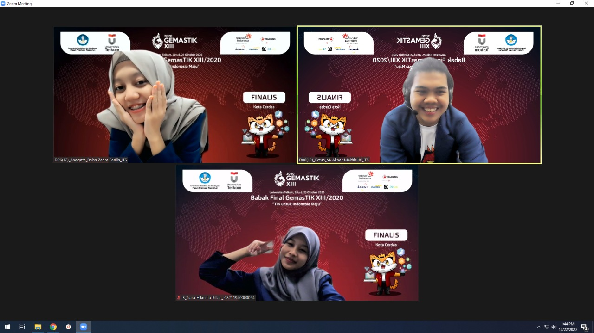
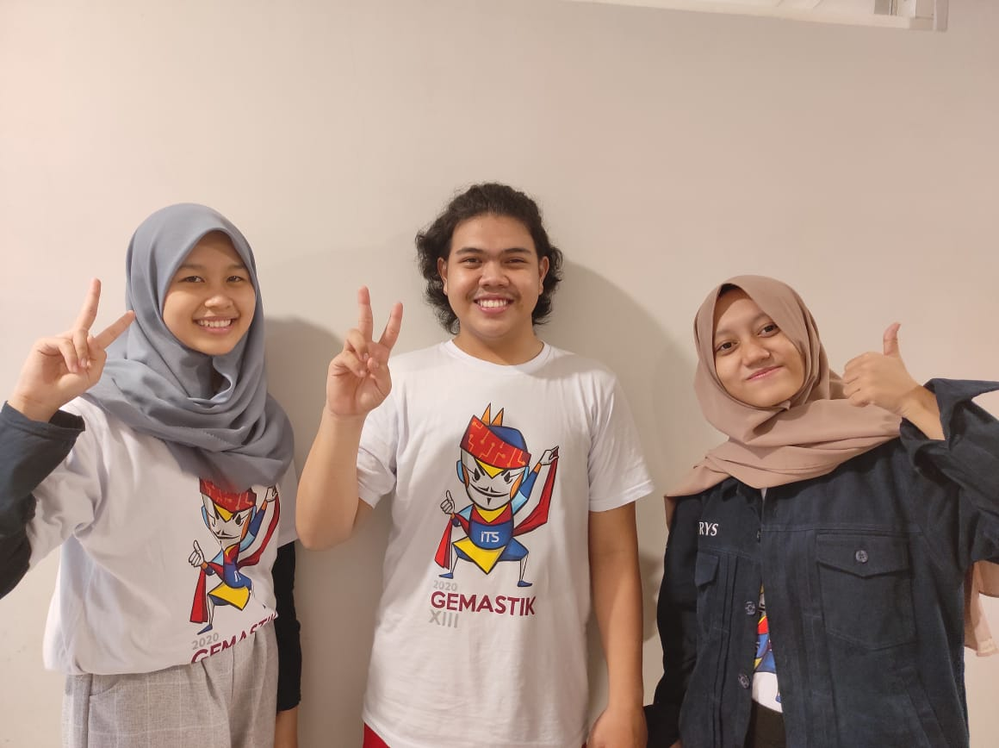

Raisa Zahra Fadila. NRP0035.
Biasanya sih dipanggil Raisa, Rais atau bahkan Rys.
Sekarang sedang menempuh semester tiga di Institut Teknologi Sepuluh Nopember alias ITS, Departemen Sistem Informasi
Punya minat di bidang coret-mencoret yang memper ke bidang DKV, tapi karena (dengan amat senang dan ikhlas) terlanjur masuk di SI, sekarang sedang mencari jati diri di dunia per-SI-an. (Semoga lekas bertemu, aamiin)
Menerima kiriman postingan foto atau video kucing-kucing gemoy ^^
Catatan pengalaman yang saya alami
Semua terasa seperti mimpi. Berawal dari iseng membentuk tim kebut semalam H-1 sebelum pendaftaran ditutup dengan nama ION alias ITSOnline karena kita semua reporter di ITSOnline hingga menemukan bahwa nama tim kami ternyata 'nyangkut' dalam daftar finalis perlombaan tingkat nasional ini benar-benar tidak pernah saya bayangkan sebelumnya. Besoknya tentu saja saya disambut oleh kalang-kabutnya pikiran dan hujaman rasa panik seperti “TERUS INI GIMANA?” “IH AKU KAN MABA 2019—BARU SEMESTER TIGA—BISA APA SIH??” Dan sejuta rasa panik terus berputar-putar di kepala.
Namun disini saya beruntung—benar benar beruntung—karena saya mendapat kesempatan untuk bertukar pikiran dan berjuang bersama tim saya yang amat sangat hebat dan kerennya luar biasa! :”) meskipun jalan yang kami lalui tidak mulus dan penuh drama (IYA, DRAMA HAHAHA) Saya benar-benar bersyukur karena dengan adanya mereka kami ternyata dapat melakukannya. (Tentu saja, kami sudah menyelesaikan permasalahan kami dengan baik sebelum final. Memang ya, communication is the key!)
Yang awalnya sempat dicincang oleh evaluasi dari tim kawal dengan “…kalau seperti ini saja kalian ya Wassalam sudah” ataupun terombang-ambing gelagapan tidak karuan karena pertanyaan dewan juri yang menohok dengan lembut. Ternyata motto kami dahulu “Yuk pokoknya kita harus berjuang semaksimal mungkin, apapun hasilnya, pokoknya nanti diakhir nggak ada penyesalan karena kita sudah mengusahakan sejauh yang kita mampu!”
Dapat berbuah menjadi medali perak yang bahkan sampai sekarang-pun saya masih tidak bahwa kami telah mendapatkannya. Disini saya jadi tahu sesuatu, bahwa sesuatu yang mungkin bagi kita mustahil terjadi dapat menjadi kenyataan dalam jentikan jari jika allah menginginkannya, Alhamdulillah.
Sebelumnya saya juga tidak dapat memisahkan ungkapan terimakasih untuk Tim Kawal Gemastik ITS dan SI yang banyakk sekali membantu dan mau direpotin kami yang asal-usulnya tidak jelas ini hahaha (but im proud of our ION guys) dann untuk teammateku, Ra dan Bob dari tim ION, makasih udah mau ajak akuu! (psst iya aku buat ini sebagai appreciation post hihi lucu kan)
Pernah membuka sosial media ITS lalu membaca sneakpeek berita yang tercantum disana? Ataupun mungkin mengakses laman its.ac.id/news dan melakukan scrolling berita yang ada di sana? Ok mungkin jarang ada yang se-gabut itu. Tapi jika kalian pernah, baik sengaja maupun tidak sengaja, selamat! Kalian membaca berita yang dituliskan oleh kami, Kru ITSOnline!
Ok mungkin nama ITSOnline jarang terdengar, tidak se-eksis kantor sebelah memang. Tapi disini sebagai kru di ITSOnline saya merasa cukup senang dengan media pemberitaan tercinta saya ini! Sejujurnya, saya tidak pernah benar-benar ada keinginan untuk berkubang di dunia tulis menulis dan jurnalistik seperti ini. Dulu awal bergabung saja karena disuruh komting dan ya… saya SMA mengikuti eskul jurnalistik, NAMUN di bagian layout-layoutnya. Lagipula jurnalistik SMA saya dulu paling juga kerjaannya sekedar mengurusi madding dan majalah saja.
Dann.. jreng jreng, saya tidak menyangka sih, dahulu bisa lolos diterima menjadi reporter ITSOnline setelah melalui berbagai seleksi yang memusingkan bin menghabiskan tenaga. Setelah dijalani… ternyata asyik juga! Sebagai manusia yang memiliki bekal menulis nol putul, menulis berita dan opini tentunya menjadi tantangan terbesar saya disini. Pasalnya, di ITSOnline saya juga dituntut untuk bekerja semi-profesional (iya disini hitungannya bekerja… dan… iya, ada cuannya. Bukan SKEM aja hahaha) sehingga ketepatan waktu, akurasi tulisan hingga penataan bahasa dan pilihan kata menjadi sesuatu yang harus saya perhatikan kualitasnya.
Yah tapi selain belajar banyak, disini saya juga mendapat relasi dan bertemu orang-orang hebat. Jadi jika ditanya bagaimana rasanya menjadi kru ITSOnline, ooo tentu saja rasanya seperti menjadi ironmen^^ seru!
Coretan dan proyek iseng yang saya coba lakukan dalam rangka mengisi waktu luang dan mengembangkan diri tentunya! :)
(Blog iseng jaman dahuluu yang dibuat untuk tugas, tapi tidak jadi dilanjutkan karena procras hahaha)
© Rais 2020